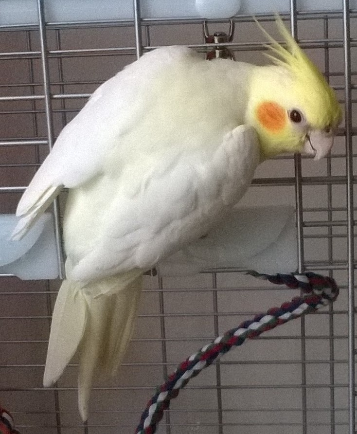
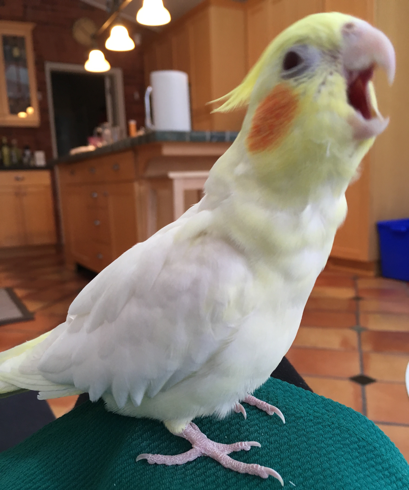
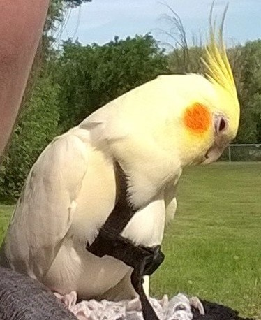
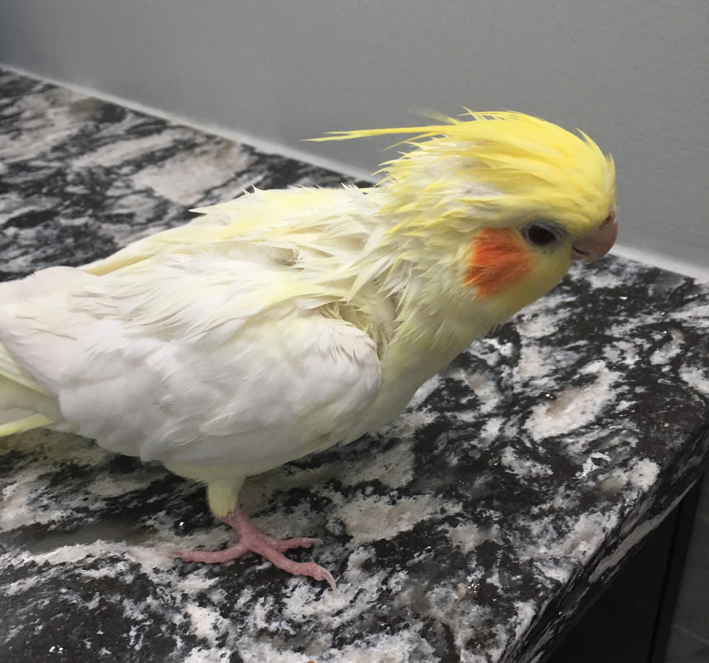
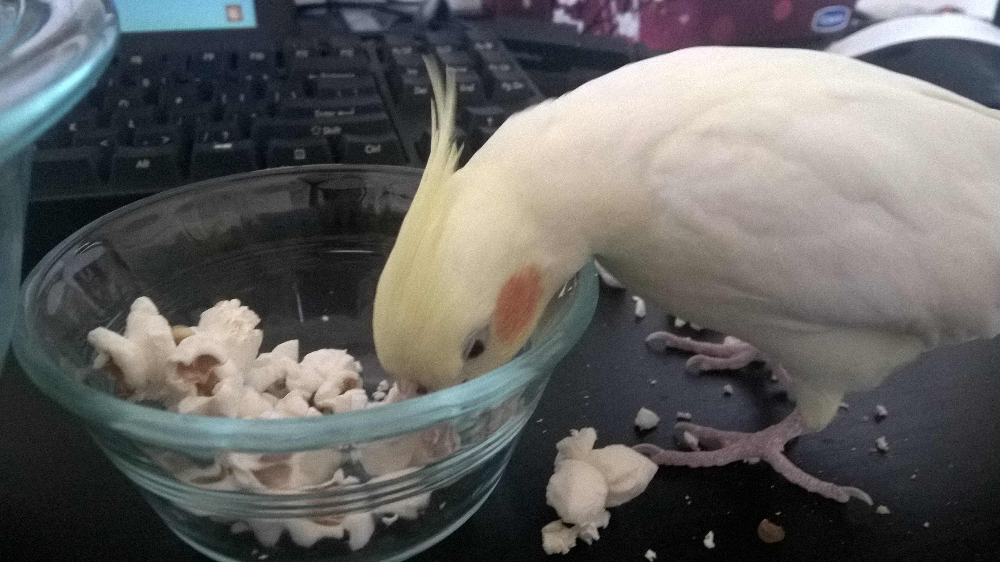
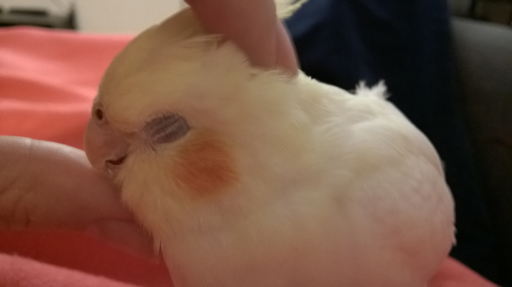
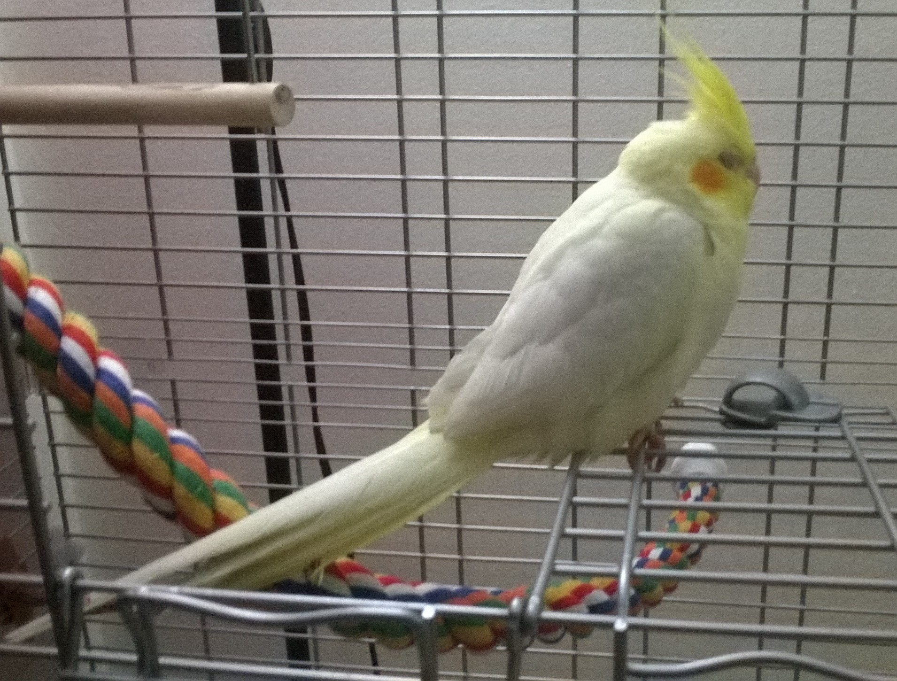
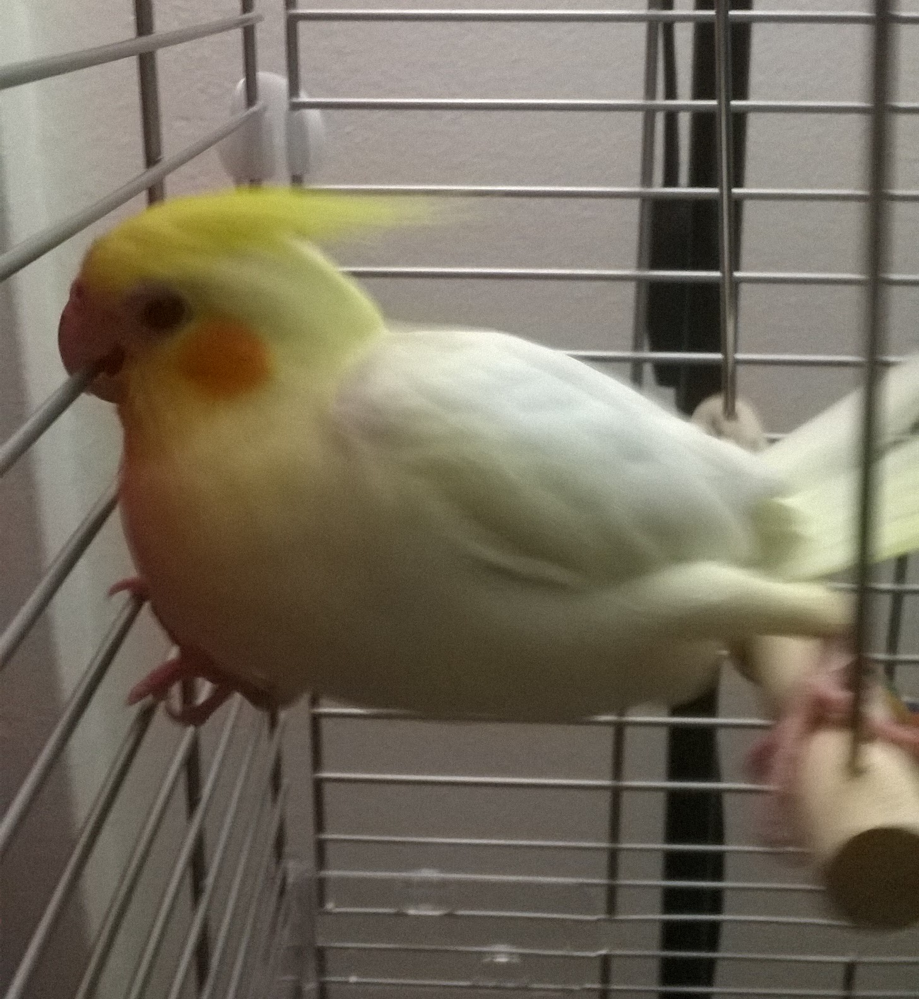
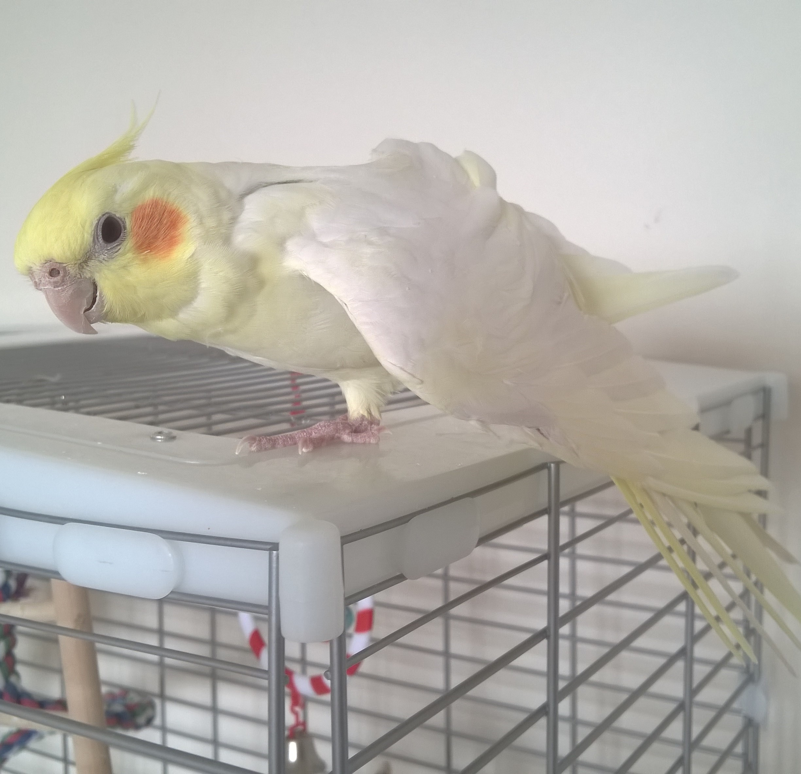
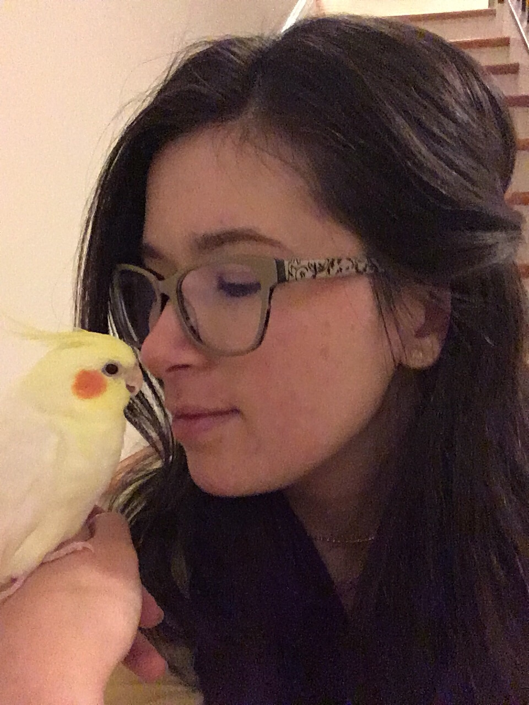

I live with a very precious/vicious cockatiel named Curry (after Haskell Curry). I knew from the first day we met and he pooped on my hand that we would become the best of friends. He enjoys millet, cuddles, and long flights around the house.
He looks like a scary dinosaur when he yawns.
He's not a big fan of going out in a harness...
...or having baths.
He does like popcorn...
...and he LOOOVES to get his head scratched...
...and is SO CUTE when he's sleeping.
Curry is a skilled gymnast...
...and he dreams of one day being a world famous figure skater, just like his idol Patrick Chan...
...but his best skill is being an adorable, sweet little guy.
